器材库 > APS及其以下画幅可换镜头数码相机 > α77 II
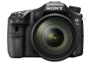
规格总览
产品类型
APS画幅可换镜头数码相机
发布日期
2014-05-16
影像规格
影像传感器
Exmor APS HD CMOS
影像传感器尺寸
23.5×15.6mm
有效像素
2430万
影像处理器
BIONZ X
色彩空间
sRGB，Adobe RGB 兼容特丽魅彩色彩技术
静态图像尺寸
3:2 L（24M） ：6000×4000 M（12M） ：4240×2832 S（6M） ：3008×2000 16:9 L（20M） ：6000×3376 M（10M） ：4240×2400 S（5.1M）：3008×1688
静态图像格式
JPEG, RAW, RAW+JPEG
静态图像质量
RAW，RAW&JPEG，超精细，精细，标准
画幅比
3:2, 16:9
短片尺寸
AVCHD:1920×1080（50p） AVCHD:1920×1080（50i） AVCHD:1920×1080（50i） AVCHD:1920×1080（25p） MP4:1440 x1080（25fps） VGA:640×480（25fps）
短片格式
AVCHD, MP4
防抖系统
机身防抖，影像传感器位移装置
镜头和对焦
镜头卡口
Minolta/Konica-Minolta/Sony AF
兼容镜头
索尼A卡口系列镜头和柯尼卡美能达MAXXUM/DYNAX镜头
对焦系统类型
TTL相位检测
对焦点
79个自动对焦点（含15个十字型对焦点，一个中央的F2.8 响应对焦点）
对焦模式
自动AF，单次AF，连续AF，DMF，手动对焦
眼控对焦
是
预测对焦控制
是
焦点锁定
是
手动对焦
支持
曝光控制
测光系统
1200区测光
测光模式
中央重点测光, 多分区评价测光, 点测光
测光范围
（ISO 100，F1.4镜头）-2EV~17EV
曝光模式
P（程序自动曝光）, 场景选择, A（光圈优先自动曝光）, S（快门速度优先自动曝光）, M（手动测光曝光）, 智能自动, 扫描全景（2D）, 动态影像, 调出存储（1.2.3）
拍摄模式
单张拍摄，连拍, 自拍定时:10秒/2秒， 自拍定时（连拍）:10秒3张影像/10秒5张影像, 连续阶段曝光,单拍阶段曝光，白平衡阶段曝光，DRO阶段曝光
场景模式
夜景, 黄昏, 人像, 风景, 微距, 运动, 夜间人像, 手持夜景
快门类型
电子控制，纵走式，焦平面快门
快门速度
1/8000秒 - 30秒，B门
闪光同步速度
1/250秒
曝光补偿
±5EV以1/3或1/2EV级调整
ISO感光度
范围：ISO 100-25600,自动（ISO 100-25600）
白平衡
日光, 白炽灯, 闪光灯, 阴天, 自定义, 阴影, 自动, 荧光灯（冷白色）, 荧光灯（日光白色）, 荧光灯（日光）, 荧光灯（暖白色）, 色温/滤光片
连拍
最快约12张/秒（连续拍摄优先AE模式下）
闪光灯
内置闪光灯
弹出式
闪光模式
自动, 强制闪光, 无线遥控, 禁止闪光, 后帘同步, 低速同步
闪光指数
约GN 12 （ISO 100，以米为单位）
闪光补偿
±3EV以1/3或1/2EV级调整
取景器/显示屏
取景器
XGA OLED Tru-Finder 电子取景器
取景范围
100%
取景放大倍率
使用50mm镜头，无限远对焦，屈光度为-1m-1时约1.09倍
屈光度调节范围
-4 .0至 +3.0m-1
LCD类型
TFT LCD
LCD尺寸
3.0英寸
LCD像素
约123万
视野率
100%
LCD特性
翻转屏
亮度调节级数
手动（±2.0级）/ 晴朗天气
文件输入/输出
存储卡
MS/MS PRO记忆棒, SD/SDHC, SDXC
数据接口
USB2.0
视频/音频接口
MIC 输入, Micro HDMI 输出
无线功能
Wi-Fi, NFC
电源
电池
可重复充电电池NP-FM500H（随机附送）
续航能力
约410张（取景器），约480张（LCD）
机身规格
颜色
黑色
尺寸
142.6×104.2×80.9mm
重量
仅机身约647g
其它
配件端口
遥控线, 脚架螺丝孔, 麦克风输入端子, X同步插孔
工作温度
0~40℃
莫飞2015-08-19 06:26
蔚蓝心情2014-12-19 19:394.5 分
操作性 5.00功能性 5.00美观性 4.00趣味性 5.00耐用性 4.00性价比 4.00解像力 4.50色彩还原 4.50
产品图 / 样片
α77 II
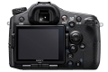
α77 II
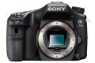
α77 II
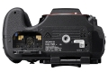
α77 II
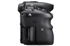
α77 II
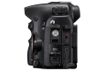
α77 II
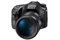
α77 II
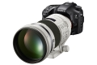
α77 II
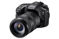
α77 II
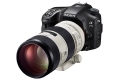
α77 II
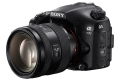
α77 II
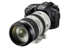
α77 II
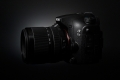
α77 II
评测 / 相关文章
- 详细内容 （存档）
- 卷土重来 索尼α77II单电详细评测 （存档）
- ［试用］索尼A77 II使用感受 （存档）
- ［试用］索尼α77II评测样张赏析 （存档）
- ［试用］A77 II 俱乐部 （存档）
- ［资讯］索尼单电相机新品α77II官方样片欣赏 （存档）
- ［资讯］APS-C画幅新旗舰 索尼发布α77 II相机 （存档）
相关文章
- ［试用］索尼A77 II使用感受 （存档）
- ［试用］卷土重来 索尼α77II单电详细评测 （存档）
- ［试用］索尼α77II评测样张赏析 （存档）
- ［试用］A77 II 俱乐部 （存档）
- ［资讯］索尼单电相机新品α77II官方样片欣赏 （存档）
- ［资讯］索尼发布单电数码相机a77II （存档）
- ［资讯］APS-C画幅新旗舰 索尼发布α77 II相机 （存档）
- ［资讯］索尼发布相机出货短缺公告 （原站已下线）